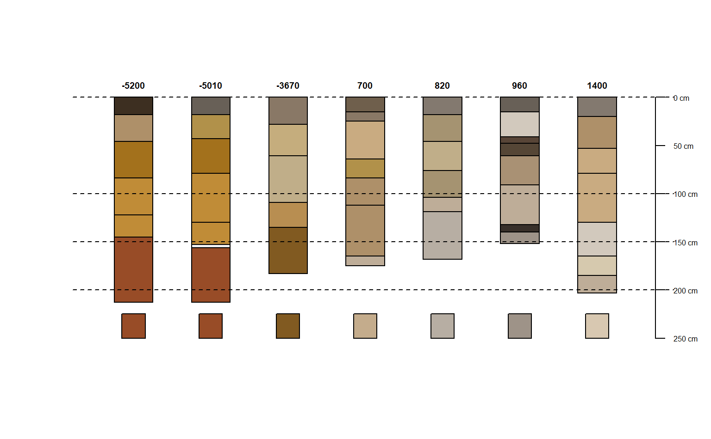

Calculate Rubification component of Profile Development Index after Harden (1982) "A quantitative index of soil development from field descriptions: Examples from a chronosequence in central California". Accepts vectorized inputs for hue and chroma to produce vector output.
In Harden (1982) rubification is calculated relative to a reference parent material. Several other non-color components are normalized relative to a maximum value and summed to obtain the overall Profile Development Index.
harden.rubification(hue, chroma, hue_ref, chroma_ref)
| hue | A character vector containing Munsell hues (e.g. "7.5YR") |
|---|---|
| chroma | A numeric vector containing Munsell chromas |
| hue_ref | A character vector containing Munsell hue(s) (e.g. "10YR") for reference material |
| chroma_ref | A numeric vector containing Munsell chroma(s) for reference material |
A numeric vector reflecting horizon redness increase relative to a reference (e.g. parent) material.
Harden, J.W. (1982) A quantitative index of soil development from field descriptions: Examples from a chronosequence in central California. Geoderma. 28(1) 1-28. doi: 10.1016/0016-7061(82)90037-4
Andrew G. Brown
library(aqp) data("jacobs2000", package="aqp") # LEFT JOIN hue, value, chroma matrix color columns horizons(jacobs2000) <- cbind(horizons(jacobs2000)[,c(idname(jacobs2000), hzidname(jacobs2000))], parseMunsell(jacobs2000$matrix_color_munsell, convertColors = FALSE)) #' # calculate a mixed 150-200cm color ~"parent material" jacobs2000$c_horizon_color <- profileApply(jacobs2000, function(p) { # and derive the parent material from the 150-200cm interval p150_200 <- glom(p, 150, 200, truncate = TRUE) p150_200$thickness <- p150_200$bottom - p150_200$top # subset colors and thickness clrs <- na.omit(horizons(p150_200)[,c('matrix_color_munsell','thickness')]) # simulate a subtractive mixture using thickness as weight mixMunsell( clrs$matrix_color_munsell, w = clrs$thickness, mixingMethod = 'exact')$munsell }) # segment profile into 1cm slices (for proper depth weighting) jacobs2000$rubif <- profileApply(jacobs2000, function(p) { # sum the melanization index over the 0-100cm interval p0_100 <- segment(p, 0:100) ccol <- parseMunsell(p$c_horizon_color, convertColors = FALSE) sum(harden.rubification( hue = p0_100$hue, chroma = as.numeric(p0_100$chroma), hue_ref = ccol$hue, chroma_ref = as.numeric(ccol$chroma) ), na.rm = TRUE) }) jacobs2000$rubiforder <- order(jacobs2000$rubif) # Plot in order of increasing Rubification index plotSPC(jacobs2000, axis.line.offset = -1, color = "matrix_color", label = "rubif", plot.order = jacobs2000$rubiforder) abline(h = c(0,100,150,200), lty = 2) # Add [estimated] parent material color swatches trash <- sapply(seq_along(jacobs2000$c_horizon_color), function(i) { rect(i - 0.15, 250, i + 0.15, 225, col = parseMunsell(jacobs2000$c_horizon_color[jacobs2000$rubiforder[i]])) }) 